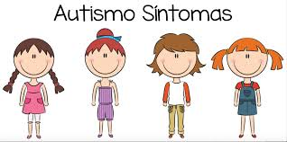

¿Que es el Autismo?
El Trastorno del Espectro Autista (TEA) es un trastorno neurobiológico del desarrollo que ya se manifiesta durante los tres primeros años de vida y que perdurará a lo largo de todo el ciclo vital.
Sintomas del Autismo

Los síntomas fundamentales del autismo son dos:
• Deficiencias persistentes en la comunicación y en la interacción social.
• Patrones restrictivos y repetitivos de comportamiento, intereses o actividades.
Los indicios que pueden ser indicativos del TEA en los niños son:
• En el parvulario y en la escuela, hay falta de interés por los otros niños.
• No comparten intereses (no acostumbran a señalar con el dedo aquello que les llama la atención para compartirlo con los demás).
• Ausencia de juego simbólico (dar de comer a muñecas, hacer cocinitas, jugar a coches como si fueran de verdad, etc.).
• Se establece poco contacto visual y no observan la expresión de la cara del interlocutor cuando juntos están viendo alguna cosa inusual. No acostumbran a realizar la sonrisa social.
• Su lenguaje, si existe, es literal (no entienden las bromas, los chistes, los dobles sentidos ni las metáforas).
• Evitan el contacto físico o les gusta más bien poco. Acostumbran a tener hipersensibilidad táctil, olfativa, gustativa y auditiva.
Frecuentemente existe poca sensibilidad al dolor.• Reaccionan poco ante la voz de sus padres, lo que puede hacer sospechar de un déficit auditivo.
• Presentan intereses inusuales. Además, son repetitivos y no compartidos.
• Pueden mostrar comportamientos extraños, repetitivos y auto estimulantes como el balanceo, el movimiento de aleteo de manos o caminar de puntillas entre otros.
• Los que presentan más nivel intelectual, notan que son diferentes y no entienden qué les pasa. Son la pieza del puzle que no sabe acoplarse ni encajar en el tablero social.